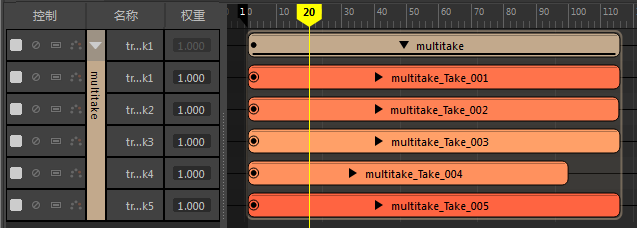
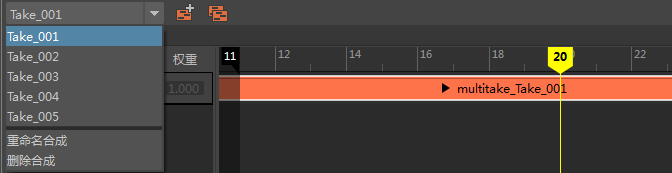
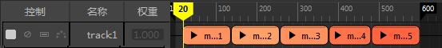

仅当从 MotionBuilder 导入包含多个 Take 的 FBX 文件时，
“时间编辑器”(Time Editor)的“导入”(Import)选项才会显示。可通过以下方式将包含多个 Take 的文件导入到
“时间编辑器”(Time Editor)中：
- 将包含多个 Take 的 FBX (.fbx) 文件从文件浏览器拖动到“时间编辑器”(Time Editor)中
- 在“时间编辑器”(Time Editor)菜单栏中选择“，然后选择包含多个 Take 的 FBX (.fbx) 文件
Take 选项(Take Options)
- “导入”(Import)选项
- Autodesk MotionBuilder 导出可能内含多个动画或 Take 的 FBX 文件。使用这些设置可定义您希望 FBX Take 在“时间编辑器”(Time Editor)中如何显示。
-
- 到一个组中(Into a Group)
- 所有 Take 成为组片段内包含的单独片段。请参见将多个片段合并为组片段。
-

- 到多个合成中(Into Multiple Compositions)
- 每个 Take 将变为一个片段并插入新合成中。请参见通过时间编辑器合成创建多个动画故事。
-

- 作为片段序列(As a sequence of clips)
- 每个 Take 将变为一个片段并沿动画轨迹并排放置。
-
